Verkefni 2
Verkefnið skiptist í þrjá hluta, vínylskurð þar sem búa átti til límmiða að eigin vali með hámarks skurðflöt 100×50 cm, parametríska, geirneglda pressfit. Hönnun sem er skalanleg með tilliti til efnisþykktar, hæðar og breiddar og loks átti að velja geislaskera og ákvarða kerf með prófunum.
Vínylskurður
Ég ákvað að hanna límmiða sem tengdist mínu áhugasviði. Þar sem ég var í eðlisfræði og hef mikinn áhuga á kjarnorku og atómfræði, valdi ég að gera atóm sem límmiða. Heppilega var hægt að gera límmiðann bleikann sem er akkúrat minn uppáhalds litur. Mér fannst skemmtilegt að tengja verkefnið við mitt nám og persónulegan áhuga.
Ég fann mynd af einföldu atómtákni á netinu sem hentaði vel sem grunnur. Ég vistaði myndina og hlóð henni niður á tölvuna mína. Því næst opnaði ég myndina í Inkscape til að undirbúa hana fyrir vínylskurð.
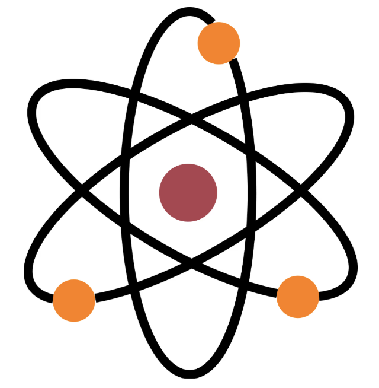
Mynd 1: Atómtáknið sem var notað sem grunnur.
Í Inkscape notaði ég "Trace Bitmap" til að breyta myndinni í vektorgrafík svo hægt væri að skera hana út. Ég passaði að fjarlægja "fill" og hafa aðeins "stroke" í svörtum lit. Línuþykktin var stillt mjög þunn svo vínylskerinn myndi fylgja útlínunum nákvæmlega.
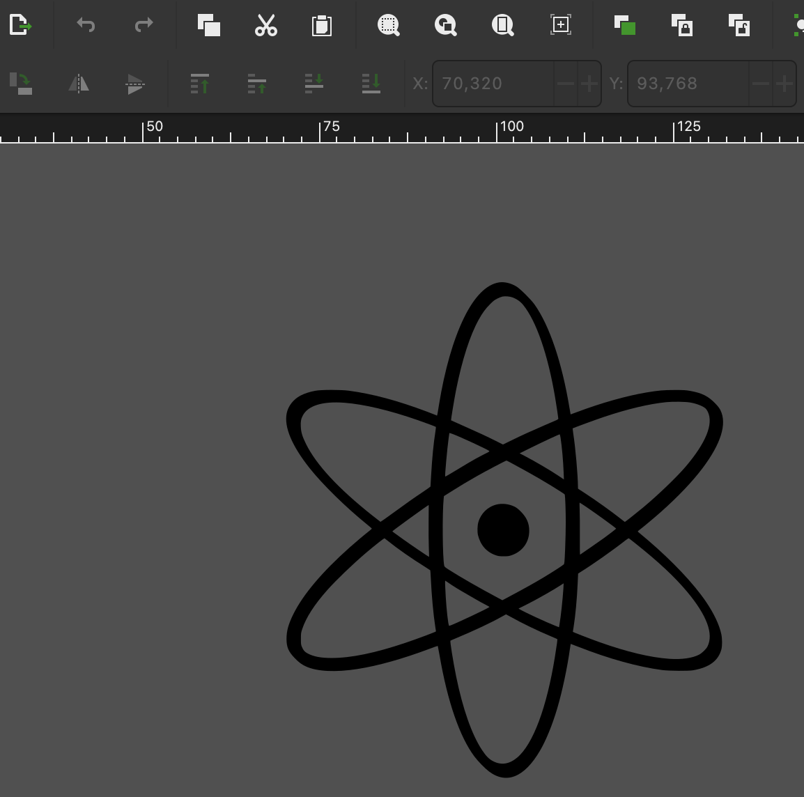
Mynd 2: Atóm mynd tilbúin í Inkscape.
Síðan fylgdi ég leiðbeiningum frá kennara í tímanum og flutti skrána yfir í vínylskerann. Ég valdi bleikt vínyl til að gera límmiðann meira áberandi og skemmtilegan. Ég fékk hjálp við að stilla skerann og skurðurinn tók stuttan tíma. Ég límdi límband yfir límmiðann, fjarlægði bakpappírinn og færði hann varlega yfir á tölvuna mína. Útkoman heppnaðist mjög vel og ég er afar ánægð með límmiðann.
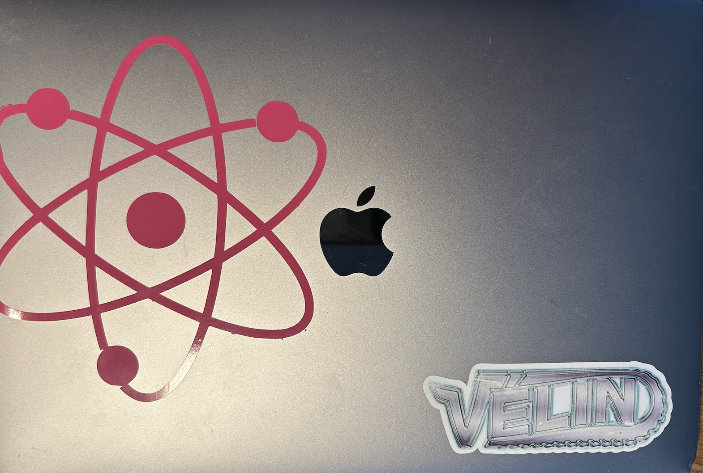
Mynd 3: Límmiði kominn á tölvu
Undirbúningur og hönnun fyrir geislaskurð
Í næsta hluta verkefnisins ákvað ég að hanna parametríska ávaxtakörfu með geirnegldri (pressfit) samsetningu. Hugmyndina fékk ég af Pinterest þar sem ég sá svipaða hönnun og fannst hún bæði falleg og nytsamleg.
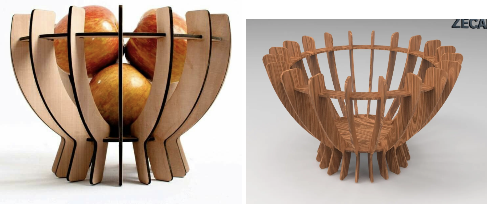
Mynd 4: Innblástur frá Pinterest
Til að byrja með ákvað ég að rissa upp í ipad hvernig ég vildi að skálin liti út. Ég skrifaði einnig niður forsendur og velti fyrir mér hversu stór og breið skálin ætti að vera.
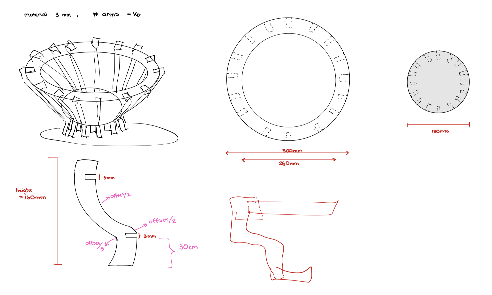
Ég útfærði körfuna sem pressfit módel sem samanstendur af:
- Efri hring (toppplötu)
- Botnplötu
- 16 bogadregnum örmum sem halda löguninni
Allt módelinu var hannað parametrískt í Fusion 360. Með parametrum gat ég breytt stærð körfunnar, efnisþykkt og fjölda arma án þess að þurfa að teikna hana upp á nýtt. Ég horfði á myndband til að átta mig betur á hugbúnaðinum Fusion 360 og skilja hvernig ég ætti að fara að. Ég hananði parametra sem ég hélt að myndu henta fyrir ávaxtakörfuna mína. Ég horfi á eftirfarandi myndband sem ég fann á fab lab youtube, til þess að öðlast betri skilning í hugbúnaðnum Fusion 360.
Parametrar
- Efnisþykkt: 3 mm
- Fjöldi arma: 16
- Breidd arma: 20 mm
- Ytri þvermál: 300 mm
- Innra þvermál: Ytra þvermál - 2*Breidd arma
- Dýpt raufanna (slots): 10 mm Allir aðrir parametrar má sjá á mynd fyrir neðan. Loks teiknaði ég hringinn, skífuna og einn arm. Ég notaði "Pattern" → "Circle" til og number_of_arms til að spegla örmunum. Ég setti svo alla hlutina saman og þá fékkst lokaútgáfan.
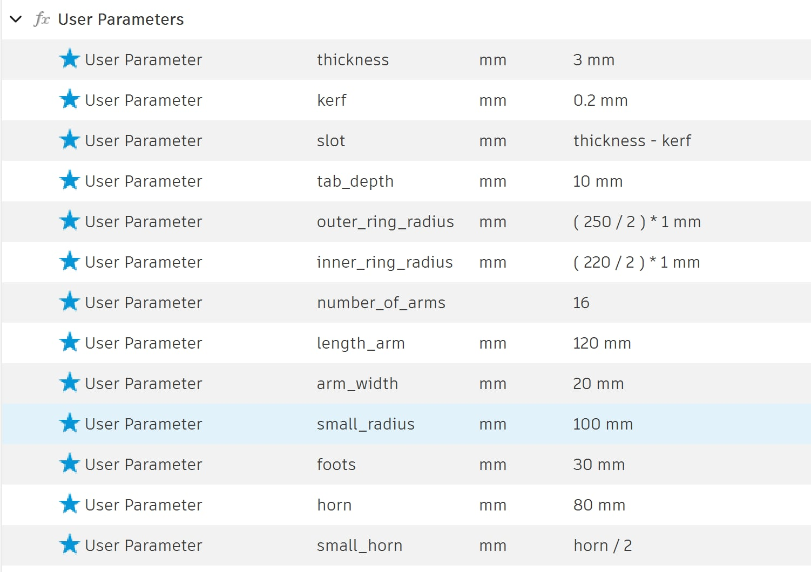
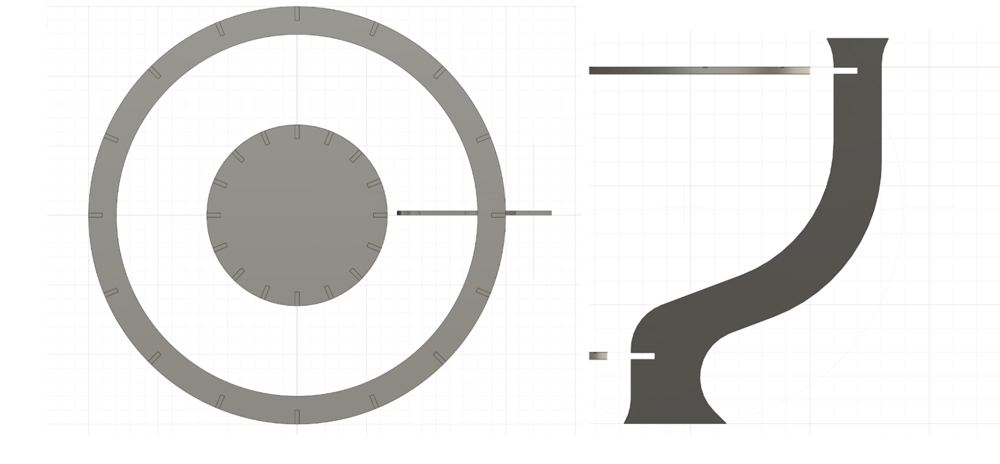
Mynd 5: Teikning í Fusion 360.
Þegar ég fór að skoða frekar þá áttaði ég mig á að laserskerinn gæti ekki skorið svona lítið niður eins og ég hefði ætlaði mér til að festa armana kyrra. Svo ég þurfti að teikna skálina upp á nýtt með aðeins öðruvísi festingum. En ég ákvað að skera 1/3 inn í hringinn og skífuna og svo 2/3 í arminn til að festa arminn betur.
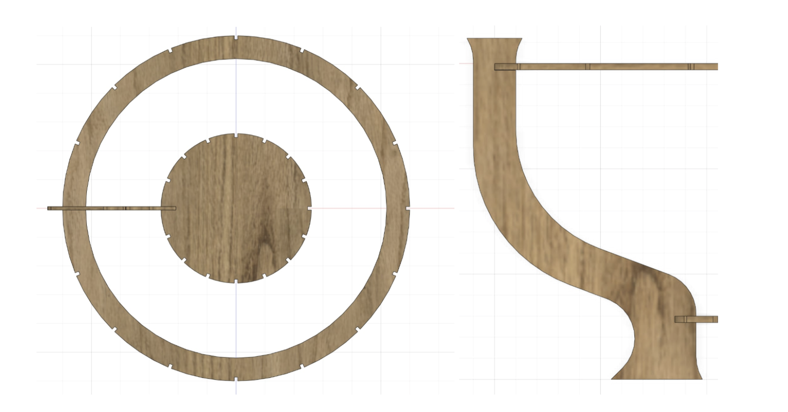
Mynd 6: Teikning aftur í Fusion 360.
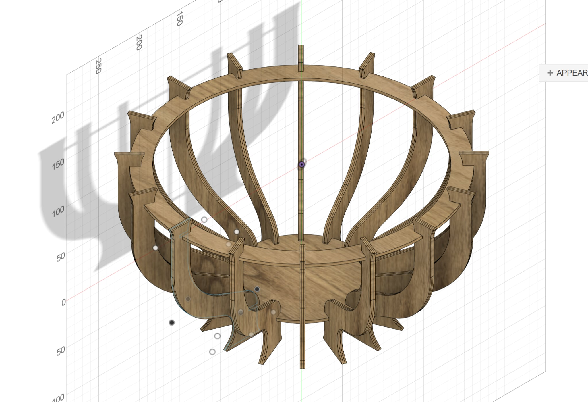
Mynd 7: 3D teikning í Fusion 360
Eftir að hafa klárað hönnunina í 3D flatti ég alla parta út á XY-plan svo hægt væri að skera þá út. Ég þurfti að bæta við kerf þykkt en það gerði ég með því að horfa á myndband frá Fab lab Akureyri sem ég fylgdi skref fyrir skref. Síðan fór ég í "Create" → "Project/Include" → "Project" og valdi alla hlutina með “line” til að tryggja réttar útlínur og vistaði 2D myndina sem DWG sem ég gat síðan opnað í Inkscape. Í Inkscape valdi ég einn hlut í einu og gerði Ctrl g sem "grúbbaði" saman línurnar og svo raðaði ég hlutunum á 500 x 500 síðu í Inkscape.
3D líkanið af geymsluboxinu sem hægt er að snúa.
Næst horfði ég á tvö youtube til að hjálpa mér að stilla kerf og færa fusion skrá inn í inkscape og græja hana svo hún væri tilbúin í laserskurð.
Ég vistaði loks skrána í inkscape og færði yfir á lykil svo ég gæti nú opnað í tölvunni tengd laserskeranum.
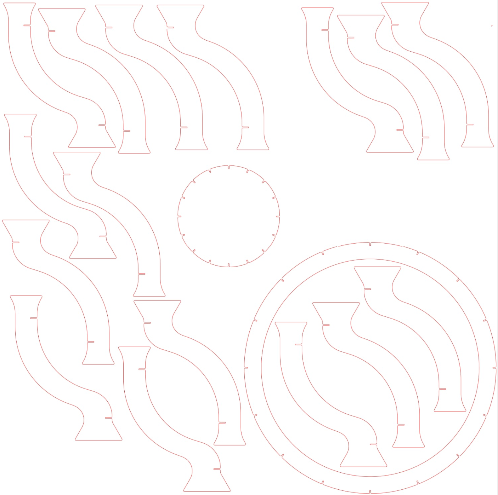
Mynd 6: Layout fyrir geislaskurð.
Ég ákvað að gera örstutta prófun á festingum, en þar sem ég fékk í kerf prófun að kerf væri 0.16mm (sjá neðar). Þá ætlaði ég bara að vera alveg viss um að það virkaði. Þá byrjaði ég á að skera lítinn hluta af arminum og skera út og athuga hvort hann myndi ekki passa vel við þykkt plötunar (3mm).
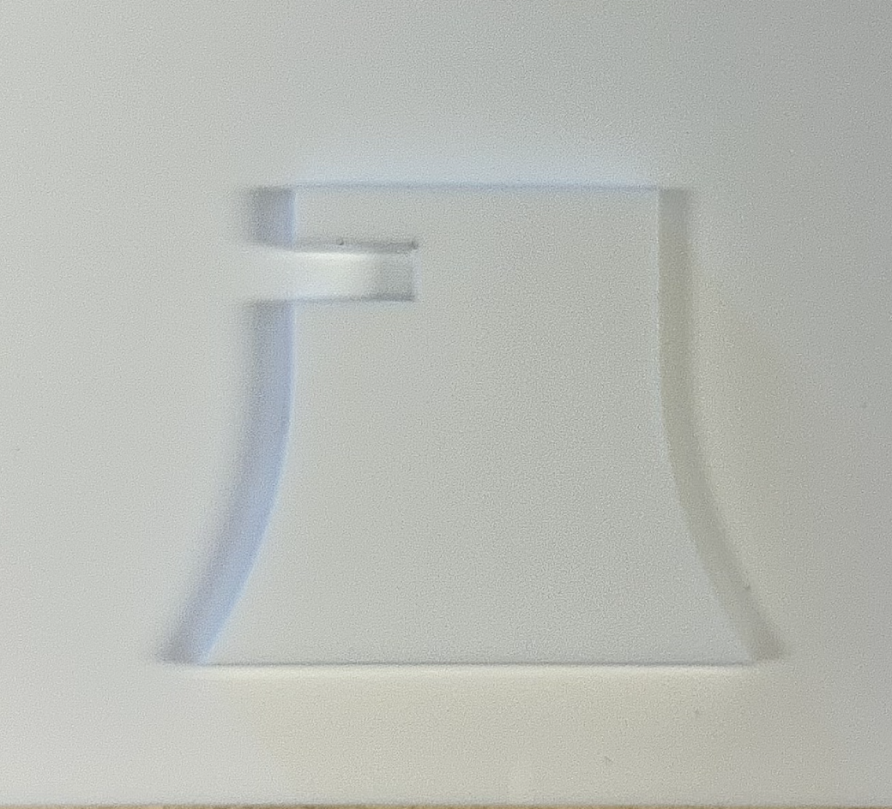
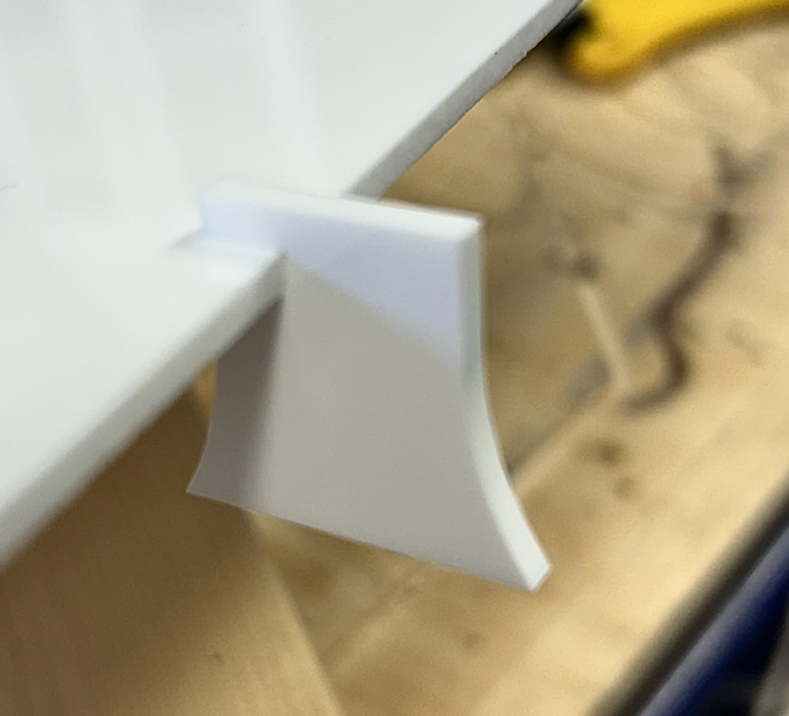
En það virkaði vel og því ákvað ég að henda í það að skera út hlutina, en það gékk nú frekar brusulega. Ég byrjaði á að skera út hringina.
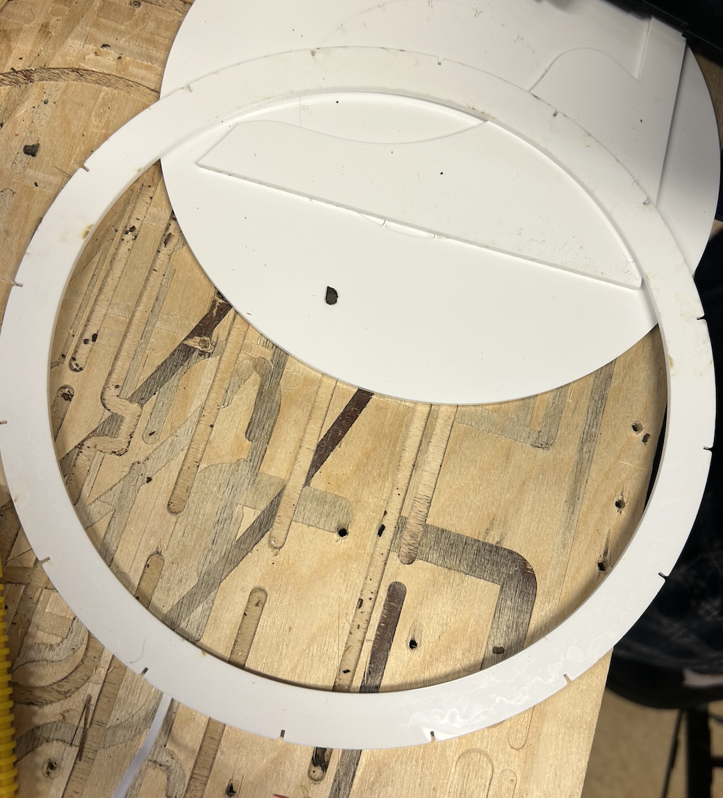
Eins og sést á myndinni þá voru götin mjög lítil og það var vegna fljótgerð að ég gleymdi að breyta í mm þegar ég færði úr fusion yfir í inkscape svo ég gerði þetta aftur en þá skar laserinn ekki í gegn. Að lokum virkaði laserskerinn vel og lokaútkoman kom vel út.
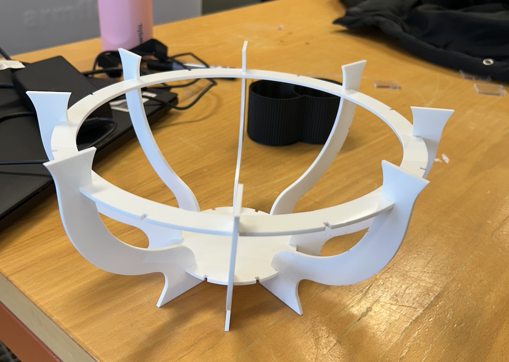

Ég endaði á að skera út aðeins átta arma þar sem þetta hefði tekið langan tíma og ég þurfti að fara kenna en samt sem áður fannst mér útkoman flott og var ég spennt að fara heim og finna eitthvað nógu stórt til að geyma í þessari skál.
Kerf próf
Til að tryggja að samsetningar pössuðu vel var framkvæmd kerf-prófun, þ.e. mæling á breidd laserskurðarins.
Við teiknuðum 9 jafn stóra rétthyrninga inn í ramma í Fusion. Skráin var vistuð sem .dxf og opnuð í Inkscape
til þess að hægt væri að skera þá út í geislaskeranum.
Eftir skurðinn voru gerðar mælingar á kubbunum og götunum sem urðu eftir. Út frá mismuninum var kerf reiknað og fékkst 0,16 mm.
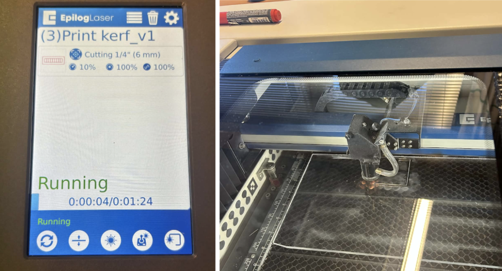
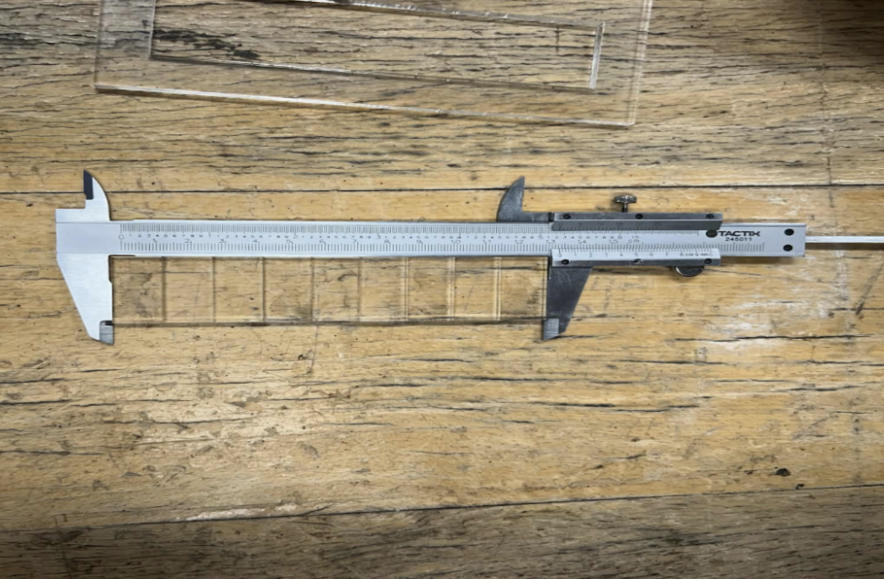
Mynd 7: Kerf prófun.
Þegar hönnunin var fullfrágengin með réttum stillingum (að teknu tilliti til 0,16 mm kerf) var komið að lokaskurði. Allir hlutir voru skornir út og samsetningin tókst vel — allir hlutirnir pössuðu og ég gat sett ávaxtakörfuna saman án vandkvæða.
Niðurstaða
Verkefnið var góð æfing í að undirbúa skrá fyrir vínylskurð, vinna í vektorgrafík í Inkscape og hanna parametrískt pressfit módel í Fusion 360. Kerf-prófið skipti miklu máli til að fá góða passningu í lokasamsetningu.